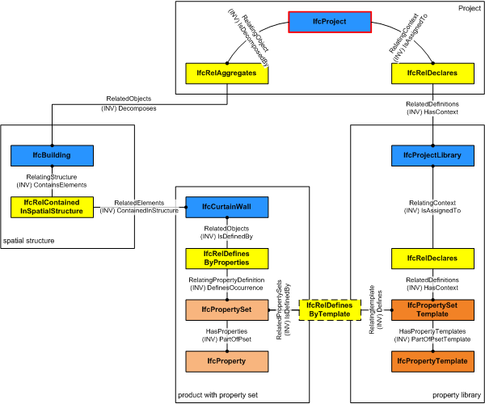

5.1.3.16 IfcPropertySetTemplate
| Modèle d'ensemble de propriété |
| Merkmalsliste - Vorlage |
IfcPropertySetTemplate defines the template for all
dynamically extensible property sets represented by
IfcPropertySet. The property set template is a container
of property templates within a property tree. The individual
property templates are interpreted according to their Name
attribute and shall have no values assigned.
NOTE By
convention an IfcPropertySetTemplate can also be used as a
template for an IfcElementQuantity, being a particular
type of a property set definition.
Property set templates can form part of a property library used
and declared within a project. Depending on the
TemplateType the IfcPropertySetTemplate defines a
template for:
HISTORY New entity in IFC4.
Relationship use definition
The inherited HasContext inverse relation to IfcRelDeclares is used to declare the IfcPropertySetTemplate within a project library. If included in an exchange data set it can then be traversed through the IfcProjectLibrary.
The Defines inverse relation to IfcRelDefinesByTemplate is provided to keep the definition relationship between the IfcPropertySetTemplate and the one to many IfcPropertySet's, for which it provides the template.
Between IfcProperty's within the HasProperties set of IfcPropertySet having the same Name attribute value as the IfcPropertyTemplate's within the HasPropertyTemplates set of IfcPropertySetTemplate an implicit definition relationship is established that assigns the template to the individual properties.
Figure 96 illustrates relationships used for property set templates.
 |
Figure 96 — Property set template relationships |
XSD Specification:
<xs:element name="IfcPropertySetTemplate" type="ifc:IfcPropertySetTemplate" substitutionGroup="ifc:IfcPropertyTemplateDefinition" nillable="true"/>
<xs:complexType name="IfcPropertySetTemplate">
<xs:complexContent>
<xs:extension base="ifc:IfcPropertyTemplateDefinition">
<xs:sequence>
<xs:element name="HasPropertyTemplates">
<xs:complexType>
<xs:sequence>
<xs:element ref="ifc:IfcPropertyTemplate" maxOccurs="unbounded"/>
</xs:sequence>
<xs:attribute ref="ifc:itemType" fixed="ifc:IfcPropertyTemplate"/>
<xs:attribute ref="ifc:cType" fixed="set"/>
<xs:attribute ref="ifc:arraySize" use="optional"/>
</xs:complexType>
</xs:element>
</xs:sequence>
<xs:attribute name="TemplateType" type="ifc:IfcPropertySetTemplateTypeEnum" use="optional"/>
<xs:attribute name="ApplicableEntity" type="ifc:IfcIdentifier" use="optional"/>
</xs:extension>
</xs:complexContent>
</xs:complexType>
EXPRESS Specification:
|
ENTITY IfcPropertySetTemplate
|
|
|
| ExistsName | : | EXISTS(SELF\IfcRoot.Name); | | UniquePropertyNames | : | IfcUniquePropertyTemplateNames(HasPropertyTemplates); |
|
 EXPRESS-G diagram
EXPRESS-G diagram
Attribute Definitions:
| TemplateType | : |
Property set type defining whether the property set is applicable to a type (subtypes of IfcTypeObject), to an occurrence (subtypes of IfcObject), or as a special case to a performance history.
The attribute ApplicableEntity may further refine the applicability to a single or multiple entity type(s).
|
| ApplicableEntity | : |
The attribute optionally defines the data type of the applicable type or occurrence object, to which the assigned property set template can relate. If not present, no instruction is given to which type or occurrence object the property set template is applicable. The following conventions are used:
- The IFC entity name of the applicable entity using the IFC naming convention, CamelCase with IFC prefix
- It can be optionally followed by the predefined type after the separator "/" (forward slash), using upper case
- If a performance history object of a particular distribution object is attributes by the property set template, then the entity name (and potentially amended by the predefined type) is expanded by adding '[PerformanceHistory]'
- If one property set template is applicable to many type and/or occurrence objects, then those object names should be separate by comma "," forming a comma separated string.
EXAMPLE Refering to a boiler type as applicable entity would be expressed as 'IfcBoilerType', refering to a steam boiler type as applicable entity would be expressed as 'IfcBoilerType/STEAM', refering to a wall and wall standard case and a wall type would be expressed as 'IfcWall, IfcWallStandardCase, IfcWallType'. An applicable IfcPerformanceHistory assigned to an occurrence or type object would be indicated by IfcBoilerType[PerformanceHistory], or respectively IfcBoilerType/STEAM[PerformanceHistory].
|
| HasPropertyTemplates | : |
Set of IfcPropertyTemplate's that are defined within the scope of the IfcPropertySetTemplate.
|
| Defines | : |
Relation to the property sets, via the objectified relationship IfcRelDefinesByTemplate, that, if given, utilize the definition template.
|
Formal Propositions:
| ExistsName | : |
The Name attribute has to be provided. The attribute is used to specify the signifier of the property set template. The properties that are allowed to be attached to a particular property set template may be given within the property set definition part of the IFC specification.
|
| UniquePropertyNames | : |
Every individual IfcPropertyTemplate within the property set template shall have a unique Name attribute value.
|
Inheritance Graph:
|
ENTITY IfcPropertySetTemplate
|
Examples:
 Link to this page
Link to this page